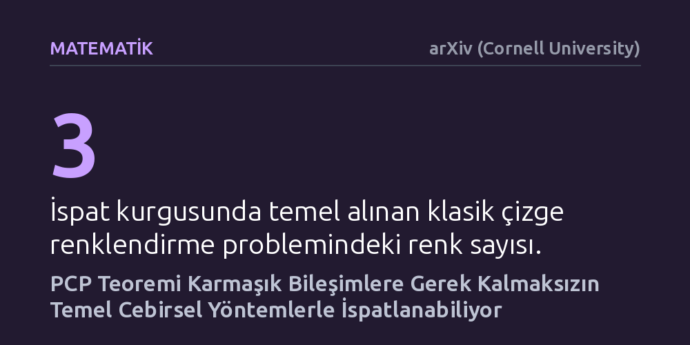

MATEMATIK · arXiv (Cornell University) · 2026-10-24
Araştırmacılar, teorik bilgisayar biliminin temel taşlarından PCP Teoremi için karmaşık yapılara dayanmayan sade bir ispat aradı. Geliştirilen yeni kodlama yaklaşımı sayesinde teorem, karmaşık bileşimlere gerek kalmadan temel cebirsel işlemler ve düşük derece testiyle kanıtlandı.
Yıllardır son derece ağır ve takip etmesi güç matematiksel mekanizmalarla açıklanan bu temel teoremin, aslında temel cebirsel araçlarla çok daha sade bir şekilde anlaşılabileceğini gösteriyor.

Teorik bilgisayar biliminde 1990'ların başında kanıtlanan 'Olasılıksal Kontrol Edilebilir İspat' (PCP) Teoremi, modern hesaplama teorisinin en önemli sonuçlarından biridir. Teorem özetle, bir matematiksel iddianın doğruluğunu denetlemek için kanıtın tamamını satır satır okumaya gerek olmadığını ortaya koyar. Bunun yerine doğrulayıcı, kanıt belgesinden rastgele seçtiği yalnızca birkaç biti kontrol ederek tezin geçerliliğini son derece yüksek bir güvenle teyit edebilir. Ne var ki bu teoremin ilk ispatları ve takip eden klasik kanıtlar, takip etmesi ve öğretmesi son derece güç, birbirine geçmiş devasa matematiksel katmanlar üzerine inşa edilmişti.
Geçtiğimiz otuz yıl boyunca araştırmacılar, bu sonucun mantığını daha berrak hale getirmek için pek çok yol denedi. 2000'li yıllarda çizge genişleticilerine dayanan kombinatoryal alternatifler geliştirilse de cebirsel kanıtlar daima 'PCP bileşimi' adı verilen, kanıtlayıcı ile denetleyiciyi defalarca iç içe geçiren hantal tekniklere bağımlı kaldı. Bilgisayar bilimcilerin zihnini kurcalayan asıl soru hiç değişmedi: Bu teorem, dışarıdan karmaşık kuramlar ve ağır teknikler ödünç almadan, sadece temel cebirsel araçlarla yalın bir biçimde açıklanamaz mıydı?
Araştırmacılar bu soruya cevap vermek için klasik bir hesaplama problemi olan çizge 3-renklendirmeyi temel aldı. Bu problem, bir çizgedeki komşu düğümlerin birbirleriyle aynı renge gelmeyecek biçimde üç farklı renkle boyanıp boyanamayacağını inceler. Ekip; doğrulayıcının logaritmik sayıda rastgele madeni para atışı yaptığı ve kanıttan sadece sabit sayıda bit sorgulayarak sonucu denetleyebildiği polinom büyüklüğünde bir ispat kurgusunu hedefledi.
Önceki cebirsel denemelerin takıldığı asıl dönüm noktası 'düşük derece testi' adı verilen kontrol mekanizmasıydı. Doğrulayıcının kanıttan sorguladığı fonksiyonların gerçekten vaat edilen düşük dereceli bir polinom olup olmadığını anlamak, geleneksel yapılarda çok sayıda karmaşık sorgu ve katmanlı inşa gerektiriyordu. Yazarlar, tek değişkenli polinomları kodlama teorisi ilkeleriyle kodlamanın temiz ve özgün bir yolunu geliştirerek bu darboğazı aştı. Bu yöntem, düşük derece denetiminin doğrudan doğruya sabit sayıda bit sorgusuyla gerçekleştirilmesini mümkün kıldı.
Elde edilen yeni ispat; kod birleştirme, polinom enterpolasyonu ve polinom çarpımı gibi doğrudan lisans düzeyinde öğretilen matematiksel işlemlerden meydana geliyor. İspatın en belirgin özelliği, önceki yaklaşımların vazgeçilmezi olan karmaşık 'PCP bileşimleri' adımını bütünüyle devreden çıkarmasıdır. Dahası doğrulayıcının kurulumu sırasında SAT ya da 3-renklendirme gibi herhangi bir problemin NP-tamlığına özel bir başvuru yapılmamış, kurgu bütünüyle kendi kendine yeten bir düzende tasarlanmıştır.
Yazarlar iddia ettikleri sadeliği soyut bir vaat olarak bırakmayıp somut algoritmalarla da destekliyor. Sonlu cisim aritmetiği varsayıldığında denetleyici mekanizmanın tüm sözde kodu yaklaşık bir sayfaya sığıyor. Benzer şekilde, çok değişkenli polinomların hesaplanması ve enterpolasyonunu yürüten dürüst kanıtlayıcının teknik açıklaması da yine yaklaşık bir sayfalık yer kaplayacak kadar derli toplu bir yapı sergiliyor.
Bu çalışma var olan bir teoremin sınırlarını genişletmiyor veya yeni bir matematiksel olgu öne sürmüyor; bilinen ve kabul görmüş bir gerçeğe giden yolu kökten sadeleştiriyor. Hesaplama karmaşıklığı derslerinde aşırı teknik ağırlığı sebebiyle çoğunlukla yalnızca sonucu aktarılıp ispatı atlanan PCP Teoremi, bu sayede hem araştırmacılar hem de lisansüstü öğrenciler için baştan sona takip edilebilir bir nitelik kazanıyor.
Öte yandan tek değişkenli polinomların kodlanması yoluyla düşük derece testinin basitleştirilmesi, cebirsel ispat mekanizmalarının geneli için taze bir araç seti sunuyor. Kendi içinde kapalı bu sadeleştirme yaklaşımı, ilerleyen dönemde sıfır bilgi ispatları ve kriptografik doğrulama protokolleri gibi pratik alanlarda kullanılan cebirsel yapıların daha şeffaf biçimde incelenmesine zemin hazırlayabilir.